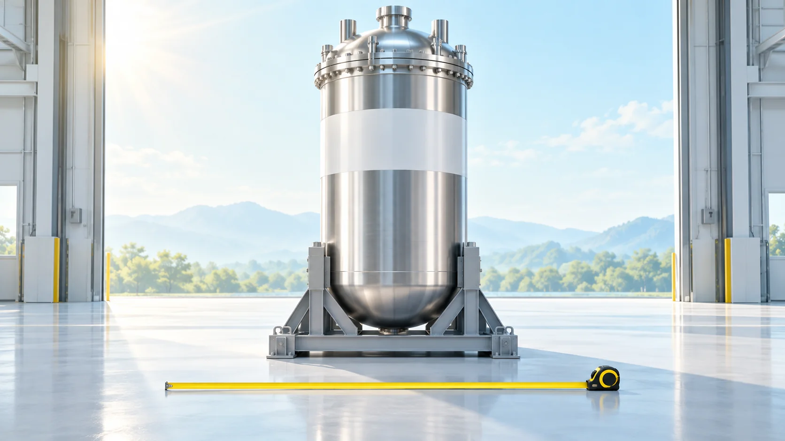
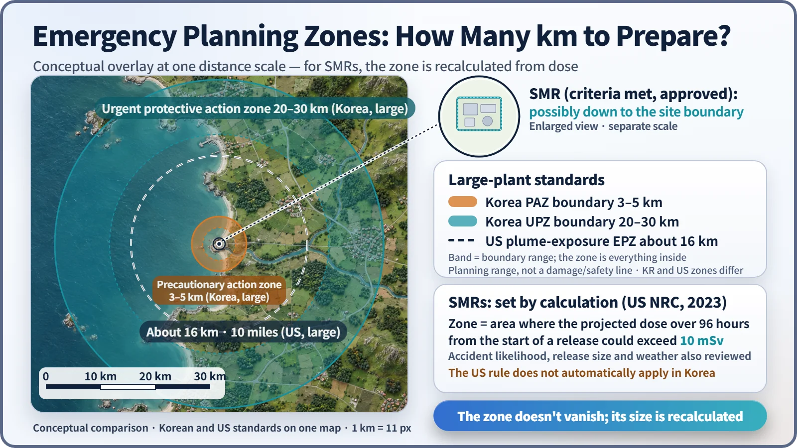
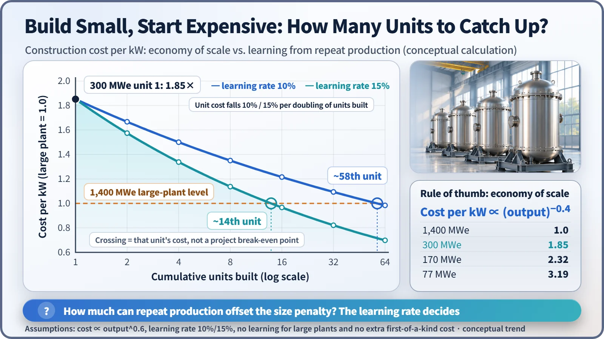

Society, Environment & the Future · 295
Big Restaurant or Food Truck? What SMRs Can Change, and What They Can't
Like a food truck next to a big restaurant, an SMR is cheaper to start and easier to place, but costs more per seat and has to learn its way down the cost curve.

Small modular reactors (SMRs) change how plants are built, how much is invested at a time, how wide an area is planned for and where plants can go. What building small does not solve by itself is the cost per kilowatt, the price of the first unit, fuel and waste, and licensing time. [1]
One project stops, others move ahead
In November 2023, a much-watched US project to build six 77 MWe small reactor modules in Idaho was quietly shelved. There was no accident and no regulatory rejection. When the target electricity price jumped from the high-$50s to $89 per megawatt-hour, not enough buyers signed up to purchase the power. [2]
Around the same time, a 300 MWe-class small reactor received a construction licence in Canada, and in February 2026 South Korea's Nuclear Safety and Security Commission received an application for standard design approval of the i-SMR. So where is the line between what an SMR can change and what it will find hard to change?
The big-restaurant owner and the food-truck operator
A big restaurant cooks hundreds of dishes at once in a large kitchen. It takes years and a huge sum to build, but once running, its equipment cost per seat is fairly low. A food truck is the opposite: a standard vehicle from the factory, small start-up costs, room to park on a small lot, and another truck when customers multiply.
That food-truck advantage is what SMRs are after. But food-truck operators also know the downsides. Equipment cost per seat tends to be higher, the first truck pays for all the trial and error, and special ingredients need a supplier first.
What gets easier: the factory, the first cheque and the "radius"
First, how things are built: making main components repeatedly in a factory gives more consistent quality and less on-site construction. Second, the size of the bet: each unit is small, so the investment unit is small and capacity can be added one unit at a time.
Third, the emergency planning zone, the area where plans to protect residents in an accident are prepared in advance. For large plants in South Korea, the precautionary action zone has a radius of 3–5 km and the urgent protective action planning zone extends 20–30 km. For large US plants it is about 16 km (10 miles).
An SMR core holds less radioactive material, produces less decay heat after shutdown, and has a larger margin for cooling without pumps. So in 2023 the US NRC changed its rules so that, for SMRs, the zone is calculated as the area where the projected dose over the 96 hours after a release could exceed 10 millisieverts. With accident likelihood, release size and weather also reviewed, a plant that meets the conditions could see that area shrink to its site boundary. [3]

The zone does not "disappear"; it is recalculated on the basis of dose. And the US standard does not automatically apply in South Korea, where SMR zone criteria are one of the key issues in the regulator's SMR framework. Fourth, a smaller radius means more places to build, such as retiring coal plant sites or sites next to factories that need steam and heat rather than electricity.
What stays hard: the wall of cost per kilowatt
A long-standing rule of thumb for power equipment says that doubling the size raises the cost only about 1.5 times (2 to the power 0.6). The smaller you build, the higher the construction cost per kilowatt:
Cost ∝ (output)^0.6 → cost per kW ∝ (output)^−0.4
With a 1,400 MWe large plant set at 1, a 300 MWe unit starts at about 1.85 times and a 77 MWe unit at about 3.2 times. SMRs hope to close the gap through learning from repeat production. If costs fall by a fixed percentage each time the cumulative number of units doubles, it takes until about the 58th unit at 10%, or about the 14th unit at 15%, before that unit's cost per kW reaches the large-plant level. That is generous to SMRs, since it ignores the fact that large plants also get cheaper when built repeatedly.

In the real world, Canada's Darlington SMR project was estimated at 20.9 billion Canadian dollars for four units (about 1,200 MWe), with 7.7 billion of that in the first unit plus its share of common facilities. The first truck is the most expensive one. [4]
What stays hard: ingredients, leftovers and the permit
| Challenge | What the evidence shows |
|---|---|
| Fuel (ingredients) | Many advanced SMRs need HALEU, enriched above 5% but below 20% uranium-235. The Western supply chain is only starting; in the US, a first pilot batch of 900 kg was delivered in 2025. Light-water SMRs such as i-SMR use fuel at 5% or less. |
| Waste (leftovers) | A 2022 PNAS study estimated that the SMR designs it analyzed could increase disposal volume 2 to 30 times for the same electricity, because more neutrons leak from a small core. Industry disputes the assumptions; the debate continues. |
| Licensing (the permit) | A new design needs a new review. The first SMR design to be certified took a little over six years from application to final approval. |
So what's the report card?
Of the 74 SMR designs reviewed by the OECD Nuclear Energy Agency as of February 2025, seven were operating or under construction, and 51 were in licensing processes in 15 countries. Russia's floating barge plant and China's high-temperature gas-cooled reactor already generate electricity. [1]
Just as food trucks did not do away with big restaurants, SMRs look less like a replacement for large plants and more like an option aimed at a different niche. How big that niche turns out to be will depend on how many "trucks" roll off the line.